|
Physics Laboratory |

|
Excel Tutorial #8 |
|
7. Graphing E |
Advanced Graphing and Curve Fitting |
9. Advanced Topics F |
 Creating plots of two data series on one graph.
Creating plots of two data series on one graph.
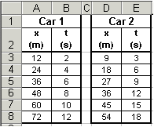
Say you wish to plot two data series on one graph. For instance, you wish to plot two position versus time curves on one graph. To the right are the position and time data for two automobiles.To plot both of these on the same graph, first follow steps 1-7 from the Graphing Tutorial on the previous page. This will create the first data series to the graph.
While the window below is still open, click
 again to create the second data series. Then repeat steps 5-7 from the
Graphing Tutorial. Continue until all data sets have been
added.
again to create the second data series. Then repeat steps 5-7 from the
Graphing Tutorial. Continue until all data sets have been
added.
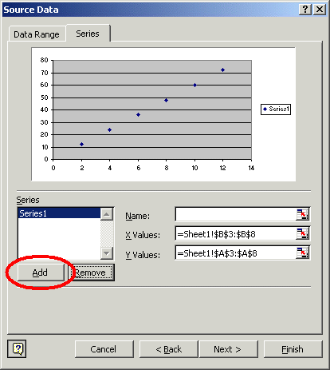
 Altering the graph's legend.
Altering the graph's legend.
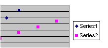
Let's continue with the above example of the two cars and their data being displayed on the same graph. The default legend is displayed to the right, and consists of data markers along with the terms Series1, Series2, etc. Unfortunately, the terms "Series1" and "Series2" tells us nothing about what is being plotted. Let's learn how to change the labels to read "Car #1" and "Car #2".
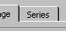
First, right-click anywhere on the graph of which you want to alter the legend and select the Source Data... option as shown below. In the window that opens, select the Series tab near the top of the window.
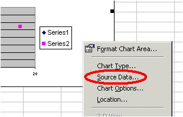
In the new window that pops up, enter the Name of the data series in the text box (see the red circle in the image below). Here we changed "Series1" to "Car #1". To alter the name of another data series, select the appropriate series (see the green circle below) and then enter its name in the text box.
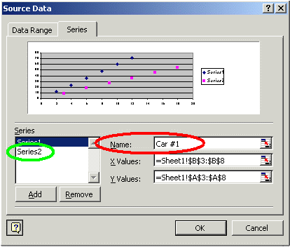
The end result is a more descriptive legend:
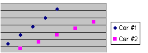
 Fitting multiple curves on one set of data.
Fitting multiple curves on one set of data.
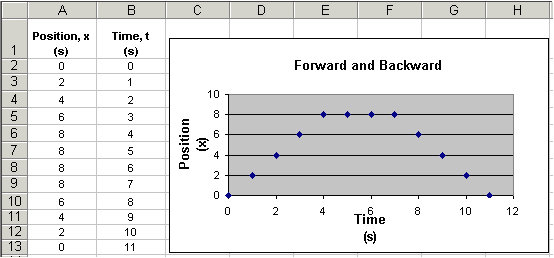
Imagine we have a situation where a robot's position is recorded as it moves forwards and then backwards. As we've done many times before, we can plot this data (see above). However, say we need to determine the robot's velocity as it moves forward and as it moves backwards. Do do this, we need to determine the slope of the data plot when the robot moves forward (positive slope) and the slope when it moves in reverse (negative slope).
Since the above graph is made from only one series of data we can only fit a single trendline to the data. In order to fit two trendlines to the data set, we must create two additional data series from the original data set and plot them on the same graph.
Here's how it is done for our robot example.
- First, look at the above graph and determine the range of both data series. In
our example, the first additional series includes data from 0 to 4 seconds, and
the second data series includes data from 7 to 11 seconds.
- Follow the steps at the top of this page and add
the additional data series. Your Source Data window may look like ours below.
Note that we are plotting three data series displayed.
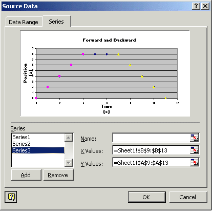
- Now right-click on a data series and select the Add Trendline...
option. (See figure below.) In this example we will use a Linear
Trendline and will display the equation on the chart.
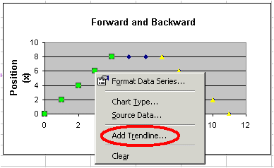
- Repeat the above step for each data series. The final result is a graph
with two trendlines displayed. See our graph below.
We now know that the robot moved forward at
a velocity of 2m/s and backward at -2m/s. (Note that the y-intercept
of the third data series can not be interpreted to have any
physical meaning.)
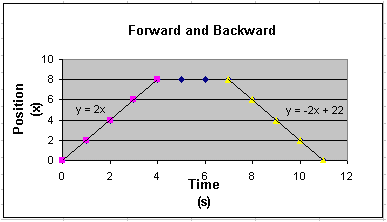
 Using error bars.
Using error bars.
In this example, we measure the mass and volume of various quantities of water. By plotting mass versus volume, we may determine the density of water from the graph's slope. Recall that M = rV. The measured data and the resulting plot is shown below.
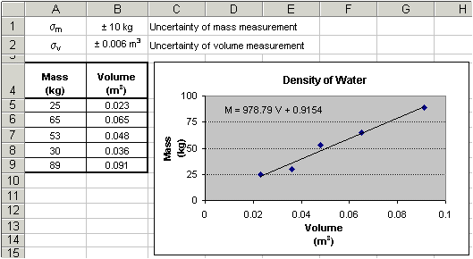
Our slope shows tells us that we are within approximately 2% of the accepted density value of 1000kg/m3. However, what we don't know is the quality of our data points. They seem to lie close to the line, but we really should display error bars to be certain.
It was determined by an analysis tool known as standard deviation (see also the Excel tutorial on standard deviation), that the uncertainty of the mass measurement was � 10kg and the volume measurement had an uncertainty of � 0.006m3. These uncertainty values will be used error bars on the graph.
Adding error bars in Excel is easy. Here's how:
- Within the graph, simply double-click on a data point
to open the Format Data Series
window. (Additionally, you can right-click on a data point and select the
Format Data Series... option, or you can click once on
a data point and then select Format >> Selected Data Series...
from the menu bar.) The resultant of any of these steps is the
opening the Format Data Series window:
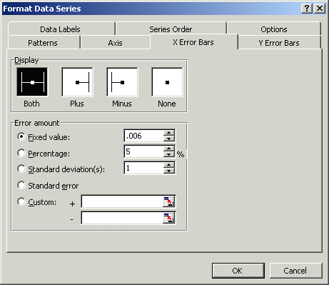
-
Click on one of the X or Y Error Bar tabs at the top of the window.
If the uncertainty of the measurement is a constant value, simply select the
Fixed value option and enter the uncertainty amount. Make sure that
you choose the proper display pattern. In this example, the uncertainty
of our volume measurement is � 0.006m3, so we enter
0.006 as the error values for the x-axis.
We also decide to display both positive and
negative errors. These options are shown in the image below:
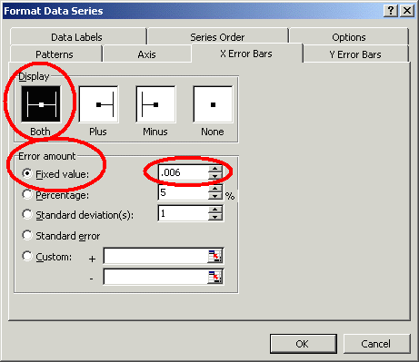
- Repeat the above step to include error bars along the other axis's. In
our example, we would enter 10 as the x-axis error bar value.
- The end result is a data plot with error bars as shown below.
Notice the error bars
small and they all fall on the trendline, indicating that the
our measurements were indeed taken carefully.
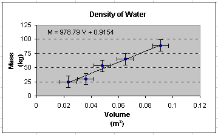
If you have a question or comment, send an e-mail to
.
|
7. Graphing E |

|
9. Advanced Topics F |
Copyright © 2000, Clemson University. All Rights Reserved.
This page was created by
.